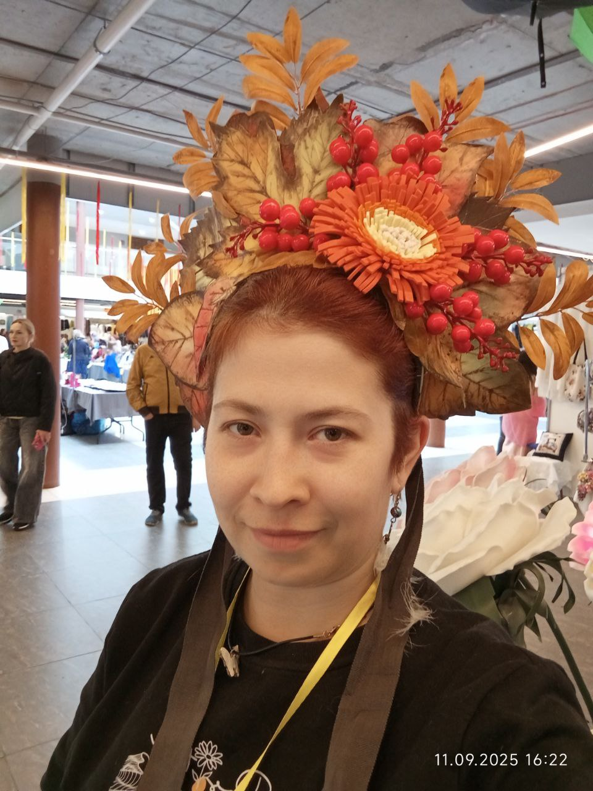
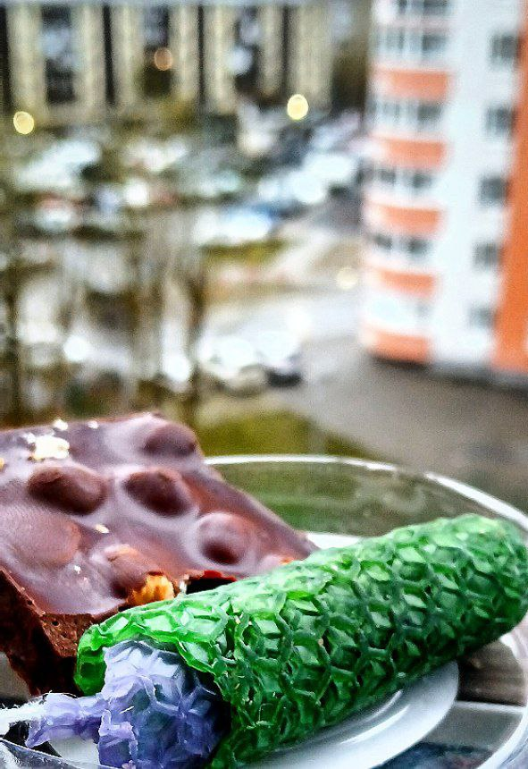
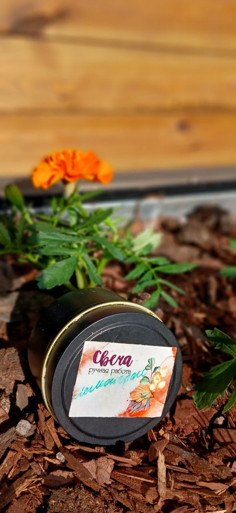
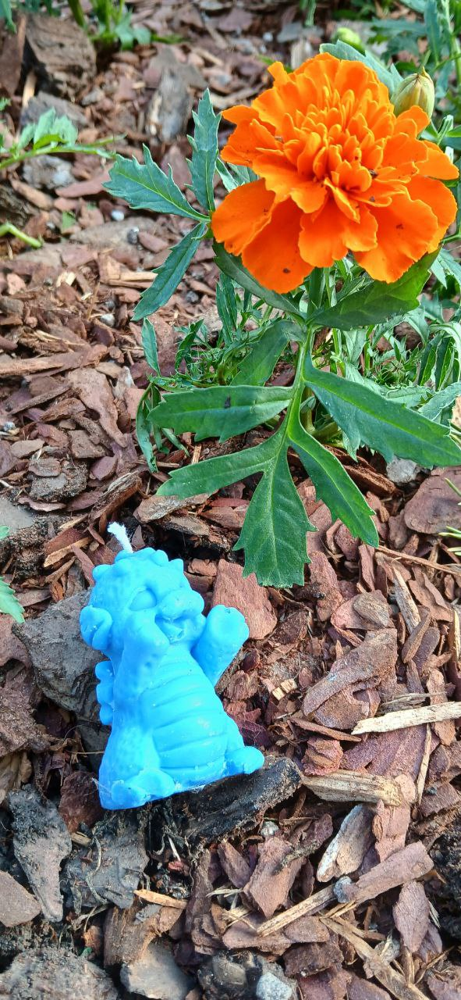
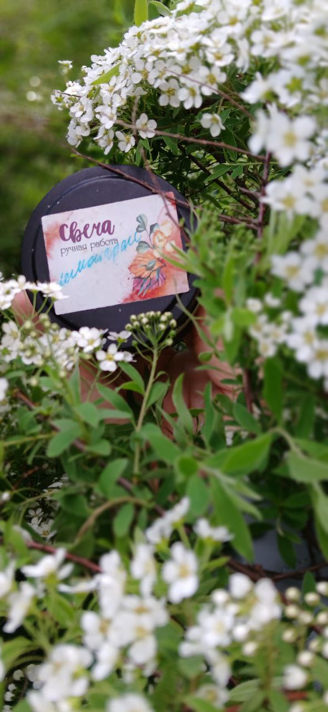

Тепло • Уют • Индивидуальность
Перейти в каталог
Привет! Меня зовут Ксения.
Я живу в Екатеринбурге и занимаюсь творчеством с 2015 года.
Я работаю с натуральным соевым и оливковым воском, создавая контейнерные и формовые свечи, а также ароматные саше. Для меня важно, чтобы каждая работа несла тепло и характер.
Смотреть свечиВ 2015 году я впервые познакомилась с декупажем. Тогда это было хобби — желание создавать красивые вещи своими руками и наполнять пространство вокруг теплом и уютом. Я начинала с простых изделий, пробовала разные техники, изучала материалы и постепенно совершенствовала свои навыки.
Со временем декупаж стал для меня чем-то большим, чем просто увлечение. Я поняла, что через предметы интерьера можно передавать настроение и характер. Ключницы, хлебницы, подставки для специй, карандашницы — каждая работа становилась особенной и уникальной. Вместе с опытом росла и уверенность в своих силах.
В 2024 году я осознала, что хочу развивать своё творчество серьёзно и создать собственную мастерскую. Этот шаг стал новым этапом — более осознанным, ответственным и вдохновляющим. Я научилась не бояться ошибок, а воспринимать их как часть профессионального роста.
Позже в моей жизни появилось свечеварение. Обучение открыло для меня новое направление и расширило возможности мастерской. Я начала работать с соевым и оливковым воском, создавать контейнерные и формовые свечи, ароматные саше. Натуральные материалы, аккуратность исполнения и внимание к деталям стали основой моей работы.
Участие в ярмарке мастеров стало важным событием — это был первый опыт представления изделий широкой аудитории. Общение с посетителями и их искренний интерес подтвердили, что мастерская развивается в правильном направлении.
Сегодня моя мастерская — это пространство творчества, уюта и вдохновения. Каждое изделие создаётся с любовью, вниманием к качеству и стремлением сделать чей-то дом теплее и красивее.
Это только начало большого творческого пути.



